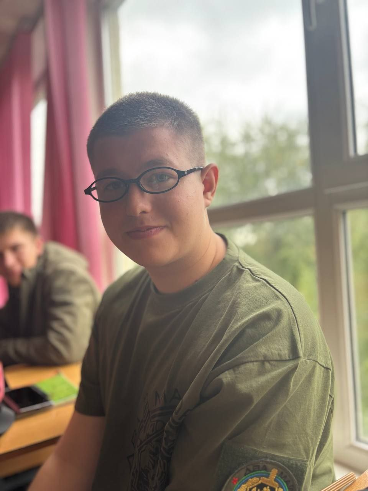
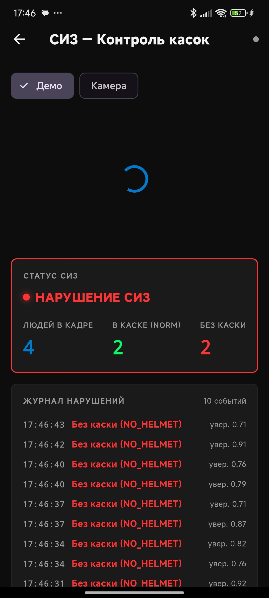
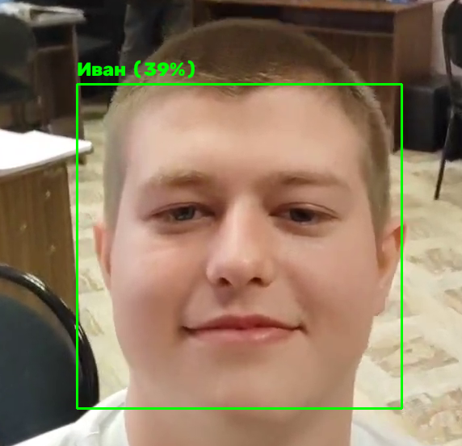
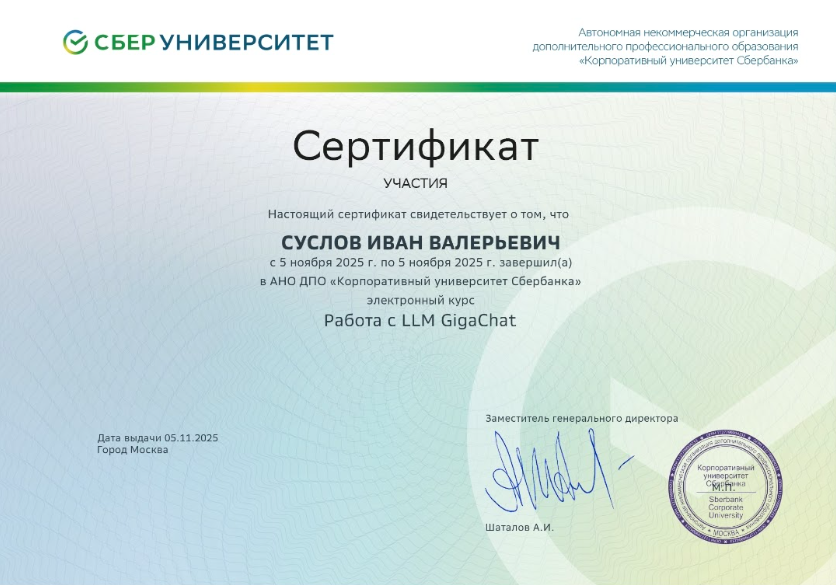
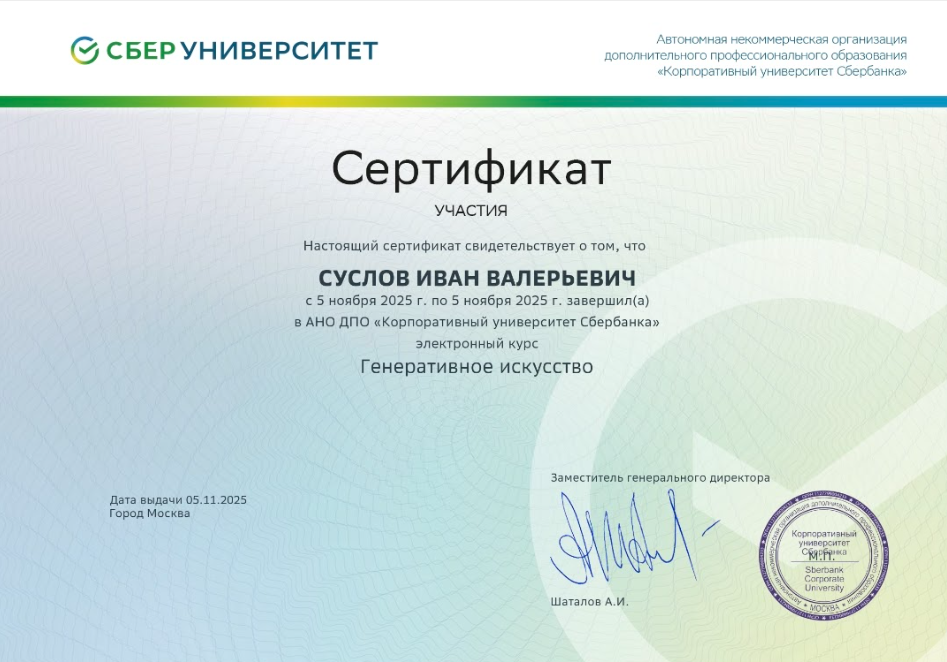

Иван Суслов
UX/UI-дизайнер • Python • SQL • Frontend
Занимаюсь разработкой дизайнов интерфейса, созданием Telegram-ботов и мобильных приложений. Имею опыт работы с базами данных и ведения технической документации.
Пройденные курсы
Интерактивная дорожная карта (SDLC)
Наведите курсор на этап, чтобы увидеть используемые инструменты.
Проекты
ИИ по распознаванию
Разработка ИИ для распознавания предметов на конвейере.


Распознавание лиц
ИИ по распознаванию лиц с определением процента уверенности.

Разработка приложений
Помощь в написании 3 приложений.


Производственная практика
Отделение ФМС России по Люберецкому району г. Люберцы
Адрес: ул. Парковая, 3
Задачи: Работа с базой данных в SQL.
Рефлексия: Закрепление навыков проектирования и управления реляционными базами данных на реальных задачах государственного учреждения.
Гимназия № 5 «Интеллект»
Адрес: Угрешская ул., 31
Задачи: Разработка и внедрение образовательных материалов.
Рефлексия: Применение навыков проектирования интерфейсов и технической документации в образовательном процессе.
Саморазвитие
Мои достижения и сертификаты

Работа с LLM GigaChat
Навыки взаимодействия с нейросетями и промпт-инжиниринг.

Генеративное искусство
Создание визуального контента с помощью нейронных сетей.
ИИ-помощник для генерации вопросов
Введите тему, и ИИ создаст вопросы для проверки знаний.
Обо мне
Возраст: 19 лет (г. Дзержинский)
Студент 3 курса ГБПОУ МО «Люберецкий техникум имени Героя Советского Союза, лётчика-космонавта Ю. А. Гагарина».
Специальность: Информационные системы и программирование(ИСП).
Средний балл: 4,8.
Телефон: +7 999 987 70 55